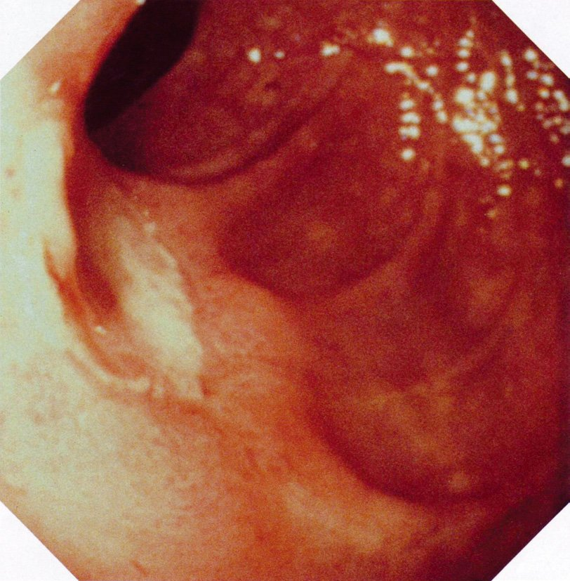
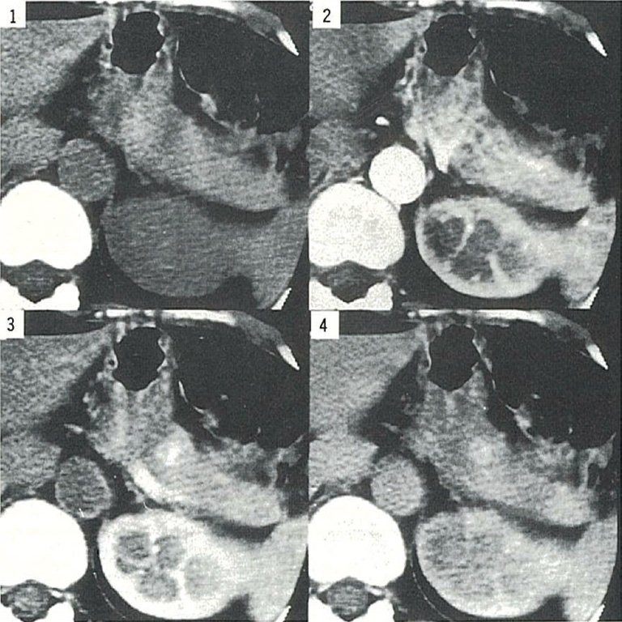

| 原因 | 機序 | キーポイント |
|---|---|---|
| 原因 | 機序 | キーポイント |
| インスリノーマ | インスリン過剰分泌 | 空腹時低血糖・Whipple三徴 |
| インスリン自己免疫症候群（IAS） | 抗インスリン抗体 | 食後遅発性低血糖・チアゾール |
| Addison病 | コルチゾール↓→糖新生↓ | 色素沈着・低Na・高K |
| 大量飲酒 | アルコール→糖新生抑制 | 空腹時・翌朝に出現 |
| 胃切除後 | ダンピング→反応性低血糖 | 食後2〜3時間後 |
| 腫瘍 | 診断検査 | 陽性所見 |
|---|---|---|
| 腫瘍 | 診断検査 | 陽性所見 |
| インスリノーマ | 絶食試験 | インスリン高値・Cペプチド高値（血糖<50mg/dL時） |
| IAS | 抗インスリン抗体 | 抗体陽性・インスリン高値 |
| ガストリノーマ（ZE） | セクレチン試験・血中ガストリン | ガストリン>200pg/mL |
| グルカゴノーマ | 血中グルカゴン | 著明高値 |
| VIPoma | 血中VIP | 著明高値 |
| 型 | 構成 | 遺伝子 |
|---|---|---|
| 型 | 構成 | 遺伝子 |
| MEN1 | 下垂体・副甲状腺・膵 | MEN1遺伝子（11q13） |
| MEN2A | 甲状腺髄様癌・褐色細胞腫・副甲状腺腺腫 | RET proto-oncogene |
| MEN2B | 甲状腺髄様癌・褐色細胞腫・粘膜神経腫・マルファン体型 | RET proto-oncogene |
| 種類 | 時間 | 原因 |
|---|---|---|
| 種類 | 時間 | 原因 |
| 空腹時低血糖 | 絶食時・早朝 | インスリノーマ・Addison病・アルコール |
| 反応性低血糖 | 食後2〜3時間 | 胃切除後・インスリン自己免疫症候群（IAS） |
| 薬剤性 | 投与後 | インスリン過剰・スルホニル尿素薬 |
| インスリノーマ | IAS | |
|---|---|---|
| インスリノーマ | IAS | |
| 低血糖のタイミング | 空腹時 | 食後遅発性・空腹時も |
| 血中インスリン | 高値 | 著明高値 |
| 血中Cペプチド | 高値（腫瘍性） | 高値（遊離型） |
| 抗インスリン抗体 | 陰性 | 陽性（高値） |
| 治療 | 腫瘤核出術 | 原因薬剤中止・ステロイド |
| Cペプチド | インスリン | 抗体 | 診断 |
|---|---|---|---|
| Cペプチド | インスリン | 抗体 | 診断 |
| 高値 | 高値 | 陰性 | インスリノーマ |
| 高値 | 著明高値 | 陽性 | IAS |
| 低値 | 高値 | 陰性 | 外因性インスリン（自己注射・MBP） |
| 低値 | 低値 | — | Addison病・下垂体機能低下症 |
| 疾患 | 検査 | キー所見 |
|---|---|---|
| 疾患 | 検査 | キー所見 |
| インスリノーマ | 血中インスリン↑・Cペプチド↑ | 絶食試験で確認 |
| IAS | 抗インスリン抗体陽性 | チアマゾール・Basedow病 |
| Addison病 | コルチゾール低値・ACTH高値 | 色素沈着・低Na・高K |
| 外因性インスリン | インスリン高値・Cペプチド低値 | MBP・自己注射 |
| 副甲状腺疾患 | PTH関連（Ca代謝） | 低血糖とは無関係 |
| 型 | 遺伝子 | 構成腫瘍 |
|---|---|---|
| 型 | 遺伝子 | 構成腫瘍 |
| MEN1 | MEN1（11q13, TSG） | 下垂体・副甲状腺過形成・膵（ガストリノーマ） |
| MEN2A | RET（10q11） | 甲状腺髄様癌・褐色細胞腫・副甲状腺腺腫 |
| MEN2B | RET（コドン918） | 甲状腺髄様癌・褐色細胞腫・粘膜神経腫・マルファン体型 |
| FMTC | RET | 家族性甲状腺髄様癌のみ |
| 腫瘍 | ホルモン | 主症状 |
|---|---|---|
| 腫瘍 | ホルモン | 主症状 |
| インスリノーマ | インスリン↑ | 低血糖（振戦・発汗）・肥満 |
| ガストリノーマ（ZE症候群） | ガストリン↑ | 難治性消化性潰瘍・胃酸過多・下痢 |
| グルカゴノーマ | グルカゴン↑ | 壊死性遊走性紅斑・耐糖能異常・体重減少 |
| VIPoma | VIP↑ | 大量水様下痢・低K・無胃酸 |
| ソマトスタチノーマ | ソマトスタチン↑ | 胆石・糖尿病・脂肪性下痢（3D） |
| 臓器 | 病変 | 特徴 |
|---|---|---|
| 臓器 | 病変 | 特徴 |
| 副甲状腺 | 過形成（最多・最初） | 高Ca血症・尿路結石・骨粗鬆症 |
| 膵臓 | ガストリノーマ最多 | 多発性・ZE症候群→難治性潰瘍 |
| 下垂体 | プロラクチノーマ最多 | 月経不順・乳汁分泌・不妊 |
| 副腎皮質 | 腫瘍（非機能性多い） | 通常は無症状 |
| 症状 | 機序 |
|---|---|
| 症状 | 機序 |
| 頻脈（高血圧発作） | β1受容体・α1受容体刺激 |
| 多汗 | 代謝亢進・発汗 |
| 頭痛 | 急激な血圧上昇 |
| 耐糖能低下 | α2受容体→インスリン分泌抑制 |
| 徐脈は起こらない | β1刺激→頻脈 |
| MEN2A | MEN2B | |
|---|---|---|
| MEN2A | MEN2B | |
| 甲状腺髄様癌 | ✓（最多・必発） | ✓（最悪性） |
| 褐色細胞腫 | ✓（50%） | ✓（50%） |
| 副甲状腺 | 腺腫（高Ca血症） | （なし） |
| 粘膜神経腫 | （なし） | ✓（舌・口腔・眼瞼） |
| マルファン体型 | （なし） | ✓ |


| 状況 | 治療 |
|---|---|
| 状況 | 治療 |
| 良性インスリノーマ（90%） | 腫瘤核出術（第一選択） |
| 膵頭部腫瘍・悪性疑い | 膵頭十二指腸切除術 |
| 手術不能・悪性 | ジアゾキサイド・オクトレオチド・化学療法 |
| 術前管理 | 低血糖予防（ブドウ糖投与・ジアゾキサイド） |
| タイミング | 原因 |
|---|---|
| タイミング | 原因 |
| 早朝・空腹時 | インスリノーマ・Addison病・ACTH欠損・アルコール性 |
| 食後遅発性（2〜3時間後） | IAS・胃切除後（ダンピング） |
| 食後早期（30分以内） | 早期ダンピング（主に浸透圧性） |
| ロイシン摂取後 | ロイシン過敏症（乳幼児） |
| 特徴 | MEN2A | MEN2B |
|---|---|---|
| 特徴 | MEN2A | MEN2B |
| 甲状腺髄様癌 | ✓（必発） | ✓（最悪性・乳幼児） |
| 褐色細胞腫 | ✓（50%） | ✓（50%） |
| 副甲状腺 | 腺腫（20%） | 通常正常 |
| 粘膜神経腫 | （なし） | ✓（特徴的） |
| マルファン体型 | （なし） | ✓ |
| 検査 | 目的 | 特徴 |
|---|---|---|
| 検査 | 目的 | 特徴 |
| 絶食試験 | 機能診断 | インスリン高値＋Cペプチド高値（低血糖時） |
| 腹部CT・MRI | 局在診断 | 小腫瘤（<2cm）→検出率60〜80% |
| 超音波内視鏡（EUS） | 局在診断 | 最も感度高い（>90%） |
| SACI試験（血管造影） | 局在診断 | 膵各部位への選択的Ca注入→インスリン上昇部位で局在確定 |